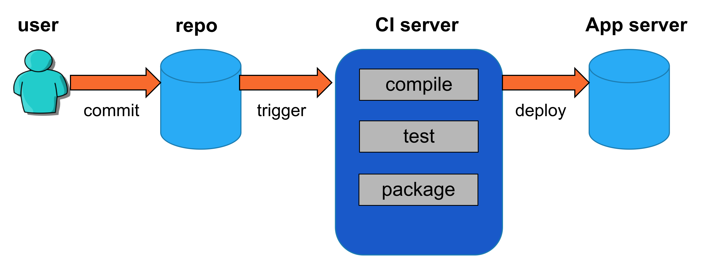
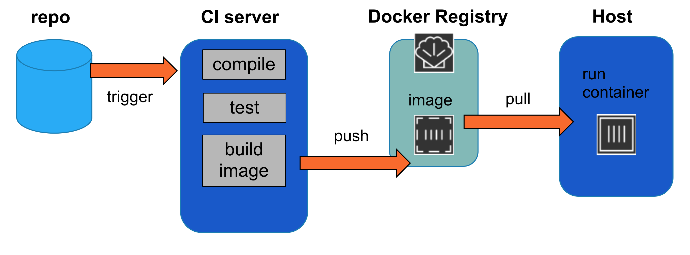
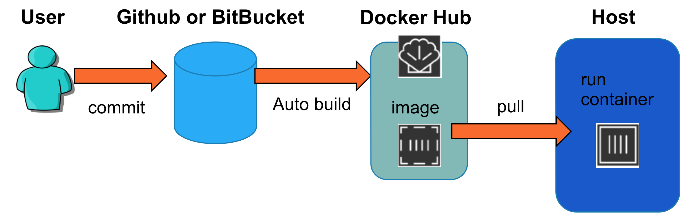

Docker in CI
- So far, we've learned the basics of creating images, running containers and interacting with Docker Hub, our first registry service. We now have enough bits and pieces to explore the fundamentals of continuous integration with Docker.
Traditional CI

- In a standard CI setup, new code passes through a testing server before making its way to production.
Downstream Containerization in CI

- One way to remove most of this pain is to have testing servers encapsulate new code in an image, so that it's guaranteed to run the same on all susbsequent steps of the pipeline.
Container-first pipeline with Image Autobuilding

- To address this, getting developers to capture their execution environment in a Dockerfile and develop their applications in a container to begin with can completely remove shipping problems at all points in the CI pipeline.
Docker CI Takeaways
Containerization is a natural tool for migrating applications through a pipeline of environments, as in CI.
Docker Hub can automatically build images from a Dockerfile pushed to GitHub or Bitbucket, to trigger this process with minimal disruption of the current workflow and tooling of a development team.
- We've seen some of the nuts and bolts of automated builds for use in CI pipelines, but there's actually a bigger issue: the question posed by CI gatekeeping - whether tests pass for a piece of code - is actually context dependent. A CI environment that observes all tests to pass, but doesn't match the production environment, is meaningless. Containerization provides the portability of execution context necessary to make CI both smooth and maximally meaningful.